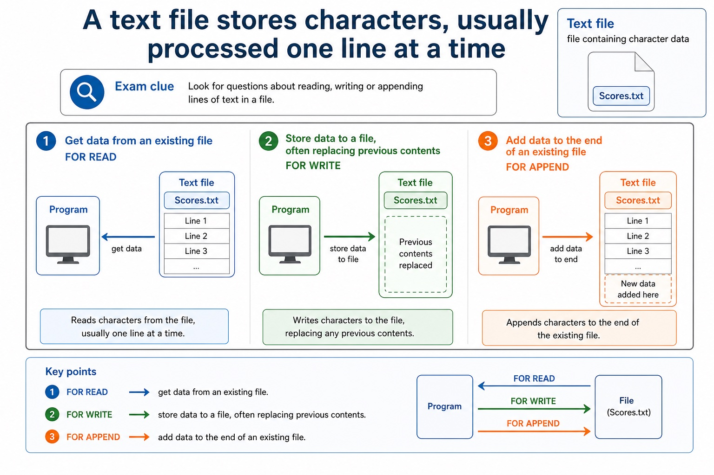
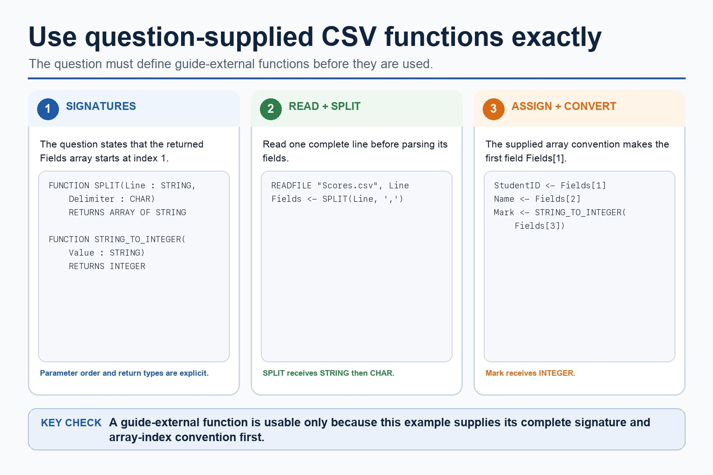
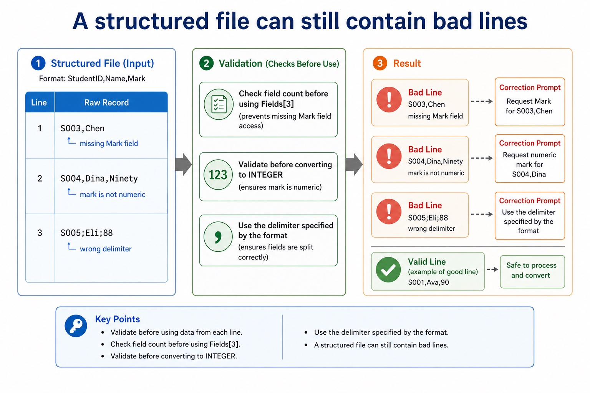
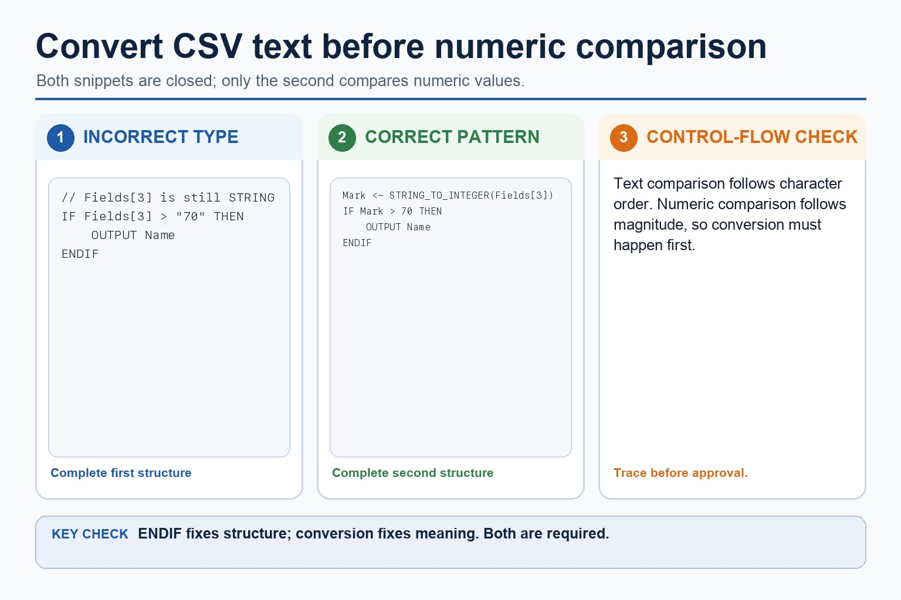
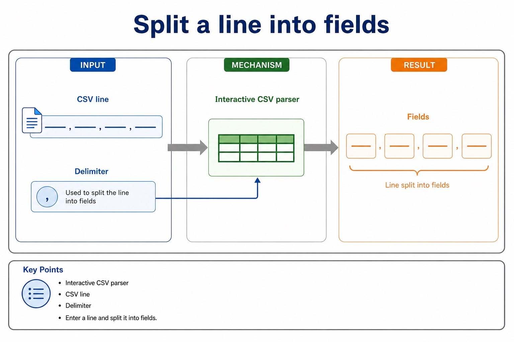

Lesson 121 | 45 minutes | Paper 2 Section 10 | informal questioning
A CSV-style file gives each text line a predictable structure.
A normal text file can hold any text. A CSV-style structured text file is more disciplined: each line
represents one record, fields appear in a fixed order, and a delimiter such as a comma separates the fields.
The exam skill is reading the line, splitting it, validating it, then using the right field.
Describe records, fields and delimiters in CSV-style lines
Parse extract fields from a line after READFILE
Validate spot missing fields and convert numeric text safely
Scores.csv
StudentID,Name,Mark
S001,Ali,72
S002,Bea,64
Fields <- SPLIT(Line, ",")
The comma is small. The consequences of ignoring it are not.
Why this matters
Paper 2 file questions often require a line to be read first, then split or parsed before a field can be tested.
Common trap
A field read from a text file is text at first. Convert marks or quantities before numeric comparison.
Warm-up hook
Which line is useful to a program?
A file stores one student's ID, name and mark. Which line is easiest to parse consistently?
Ali got 72 and is student S001
S001,Ali,72
Ali 72 S001 maybe
S001Ali72
Choose the line where field boundaries are clear and repeatable.
Concept
CSV-style means separated fields in a fixed order
Chinese support: delimiter 是“分隔符”；field position 是“字段位置”；malformed line 是“格式错误的一行”。
Record
one complete line of data
S001,Ali,72
Field
one item inside the record
Ali
Delimiter
character that separates fields
,
Fixed order
each position has agreed meaning
ID, Name, Mark
CSV-style means separated fields in a fixed order

CSV-style means separated fields in a fixed order: source-grounded visual explanation.
Lesson fact: one complete line of dataLesson fact: S001,Ali,72Lesson fact: one item inside the recordLesson fact: DelimiterLesson fact: character that separates fieldsLesson fact: Fixed orderLesson fact: each position has agreed meaningLesson fact: ID, Name, Mark
Parse fields
Read the line before splitting it
READFILE "Scores.csv", Line
Fields <- SPLIT(Line, ",")
StudentID <- Fields[1]
Name <- Fields[2]
Mark <- STRING_TO_INTEGER(Fields[3])SPLIT is used here as clear Cambridge-style pseudocode for separating a line by a delimiter.
Read the line before splitting it

Read the line before splitting it: source-grounded visual explanation.
Lesson fact: Parse fieldsLesson fact: READFILE "Scores.csv", LineLesson fact: Fields <- SPLIT(Line, ",")Lesson fact: StudentID <- Fields[1]Lesson fact: Name <- Fields[2]Lesson fact: Mark <- STRING_TO_INTEGER(Fields[3])Lesson fact: SPLIT is used here as clear Cambridge-style pseudocode for separating a line by a delimiter.
Validation
A structured file can still contain bad lines
Line
Problem
Correction prompt
S003,Chen
missing Mark field
check field count before using Fields[3]
S004,Dina,Ninety
mark is not numeric
validate before converting to INTEGER
S005;Eli;88
wrong delimiter
use the delimiter specified by the format
A structured file can still contain bad lines

A structured file can still contain bad lines: source-grounded visual explanation.
Lesson fact: ValidationLesson fact: Correction promptLesson fact: S003,ChenLesson fact: missing Mark fieldLesson fact: check field count before using Fields[3]Lesson fact: S004,Dina,NinetyLesson fact: mark is not numericLesson fact: validate before converting to INTEGERLesson fact: S005;Eli;88Lesson fact: wrong delimiterLesson fact: use the delimiter specified by the format
Text vs data types
CSV fields arrive as text, then become useful values
Incorrect comparison
IF Fields[3] > 70 THEN
OUTPUT Name
ENDIFThis compares text unless conversion has happened.
Correct pattern
Mark <- STRING_TO_INTEGER(Fields[3])
IF Mark > 70 THEN
OUTPUT Name
ENDIFThe numeric comparison now has a numeric value.
CSV fields arrive as text, then become useful values

CSV fields arrive as text, then become useful values: source-grounded visual explanation.
Lesson fact: Text vs data typesLesson fact: Incorrect comparisonLesson fact: IF Fields[3] > 70 THENLesson fact: OUTPUT NameLesson fact: This compares text unless conversion has happened.Lesson fact: Correct patternLesson fact: Mark <- STRING_TO_INTEGER(Fields[3])Lesson fact: IF Mark > 70 THENLesson fact: The numeric comparison now has a numeric value.
Pseudocode vs Java
Java split helps understanding, but Cambridge pseudocode remains the answer format
Cambridge-style pseudocode
READFILE "Scores.csv", Line
Fields <- SPLIT(Line, ",")
Mark <- STRING_TO_INTEGER(Fields[3])
Java support only
String[] fields = line.split(",");
int mark = Integer.parseInt(fields[2]);
Notice the index difference: Cambridge-style examples here use Fields[1]; Java arrays are zero-based.
Java split helps understanding, but Cambridge pseudocode remains the answer format
Java split helps understanding, but Cambridge pseudocode remains the answer format: source-grounded visual explanation.
Lesson fact: Pseudocode vs JavaLesson fact: Cambridge-style pseudocodeLesson fact: READFILE "Scores.csv", LineLesson fact: Fields <- SPLIT(Line, ",")Lesson fact: Mark <- STRING_TO_INTEGER(Fields[3])Lesson fact: Java support onlyLesson fact: String[] fields = line.split(",");Lesson fact: int mark = Integer.parseInt(fields[2]);Lesson fact: Notice the index difference: Cambridge-style examples here use Fields[1] ; Java arrays are zero-based.
Interactive CSV parser
Split a line into fields
CSV line
Delimiter
comma (,)
semicolon (;)
pipe (|)
Parse line
Enter a line and split it into fields.
Split a line into fields

Split a line into fields: source-grounded visual explanation.
Lesson fact: Interactive CSV parserLesson fact: CSV lineLesson fact: DelimiterLesson fact: Enter a line and split it into fields.
Interactive validator
Check field count and mark type
Good line
Missing field
Text mark
Wrong delimiter
Choose a sample line to validate.
Check field count and mark type
Check field count and mark type: source-grounded visual explanation.
Lesson fact: Interactive validatorLesson fact: Choose a sample line to validate.
Worked examples
CSV parsing patterns
Parse
Validate
Count passes
Write CSV
Practice
Ten quick CSV checks
Type a concise answer, then check. Each question also has its own answer button.
Mistake debugging
Fix common CSV-style file errors
Exam-style questions
Original Cambridge-style questions with expandable MS
These questions focus on delimiters, field positions, parsing, validation and strict file-processing order.
Summary
CSV-style checklist
Delimiter know which character separates fields.
Position each field position has a fixed meaning.
Convert numeric fields read from text need conversion.
Homework
Design and process a CSV-style file
Task 1: Define a format
Design a CSV-style format for Books.csv with fields BookID, Title and Pages. State delimiter and field order.
Task 2: Parse one line
Write pseudocode to read one line from Books.csv, split it, and convert Pages to INTEGER.
Task 3: Validate
Write a 5-mark explanation of why B01,Intro is malformed if the expected format is BookID,Title,Pages.